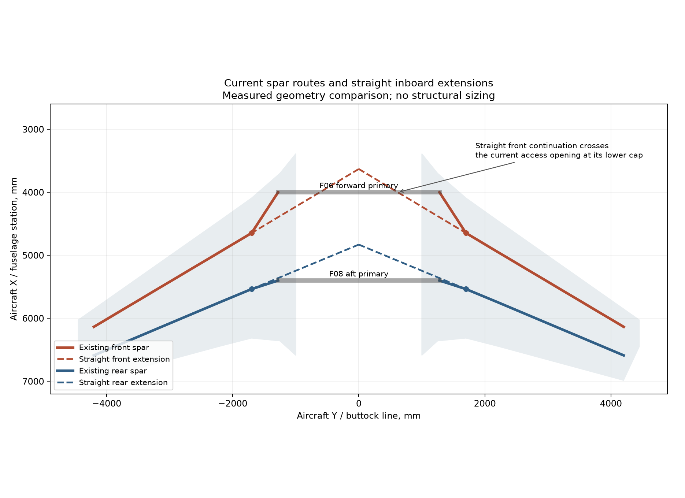

Carry the spar loads
into the fuselage.
Research and measured route comparison for the installed Revision E wing.
Finding
The main spar needs a continuous load path to the fuselage structure. That path can include a designed crank or splice.
The current spars reach the primary bulkhead arms. Native samples confirm material in their caps and webs. These checks do not substantiate the crank or the wing box.
01What the references show
- NASA CR-2020-220425: Passive Aeroelastic Tailoring Final Report. Printed pages 56-59 and 67; PDF pages 70-73 and 81.
The tested kinked wing uses special rib arrangements and local fittings at the kink. Its spar splice transfers the upper cap, lower cap, and web through distinct splice plates. This supports checking all three load paths, not only the spar outline. The composite test article does not prescribe dimensions for this aluminum aircraft.
- NASA CR-159249: Initial ACT Configuration Design Study. Printed pages 68-70; PDF pages 98-100.
The outboard wing joins a center section through the fuselage at the side-of-body rib. The center section includes spars, upper and lower panels, beams, and a centerline rib. Fittings connect primary fuselage bulkheads to the spars. This supports a complete wing-box-to-fuselage connection.
- NASA CR-4746: High-Lift Systems on Commercial Subsonic Airliners. Printed page 93, section 3.2.
The report discusses cranked inboard front spars for structural layout and systems routing. A spar does not need to follow one straight line solely because the external wing planform has a crank. This is layout context, not sizing evidence.
- Airbus: How to Make a Wing. Wing assembly description.
The completed wing joins the center wing box and fuselage. Covers, spars, and ribs form an integrated structure. An isolated spar-to-frame contact is only one part of that connection.
Engineering interpretation: preserve upper-cap tension/compression paths, lower-cap paths, web shear, and wing-box torsion transfer. At a direction change, provide structure to react the change in force direction. A visual Boolean connection alone does not establish this capacity.
02What is in this aircraft
The front spar changes plan sweep from 30.86 degrees outboard to 56.98 degrees inboard at BL 1700 mm. Its inner end meets the forward bulkhead arm at FS 4000, BL 1280 mm. The rear spar meets the aft arm at FS 5400, BL 1280 mm.
The saved root-contact checks cover both cap levels and the web. This review adds 2,440 native field samples along all four spar caps and webs. Every check passes, including material points on both sides of the crank.
The exact shared segment plane has zero field in this CSG construction. Those interface points use a zero-field check. Adjacent points must have negative material fields. This distinction prevents an internal segment plane from being misreported as a missing cap.
The current open rib at the crank and the absence of a developed inner box leave load-transfer work unfinished. Skin shear connections, cap/web splices, root fittings, local buckling, and joint stiffness need a coordinated design.

03Two coordinated revisions
| Arrangement | Required change | Consequence |
|---|---|---|
| Straight outboard spar continued inboard | Extend caps and web into a new root/carry-through arrangement. Rework the affected bulkhead opening and connections. | Removes the present sharp front-spar turn. Requires a new fuselage interface and keep-out review. |
| Cranked spar with a developed inner box | Add a full-depth transfer rib and a designed upper/lower-panel and root connection. Size the crank fittings and cap/web continuity. | Retains the existing primary stations. Adds local force-transfer demands at the crank. |
A simple straight extension does not fit the current forward carry-through: its lower cap crosses the F06 access opening. At FS 4000, the extended centerline reaches BL 618.46, with lower and upper boundaries at Z 498.60 and 734.30 mm.
The quantitative wing-root analysis and weight trade now compares these routes, relocated primary stations, and fuselage bracing. It includes George Irving's layout sketch. The current main model remains Revision E during the load-path revision.
04Reproducible evidence
Measured route comparison · Native spar checks · Check script · Research sources
The source reports inform the layout principles. Their aircraft dimensions and material systems are not design allowables for this aircraft. Source meshes support the route comparison; the continuity checks evaluate the saved native spar bodies.